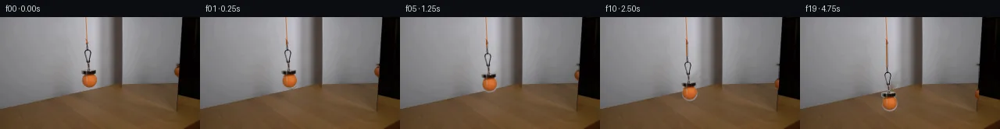

![首帧]()

Round 00
2026-11-05T03:43:39.815718+00:00像素候选变化代码 +210/−0inspection 更新
pixels 7b881315e3d51c33 · code da7286be9ddc5903
查看本轮 generate.py 真实 diff
--- previous/generate.py
+++ current/generate.py
@@ -0,0 +1,210 @@
+from pathlib import Path
+
+import cv2
+import numpy as np
+from PIL import Image, ImageDraw, ImageFont
+
+from artifact_io import save
+
+
+ROOT = Path(__file__).resolve().parent
+H, W = 144, 256
+
+
+def soft_ellipse(cx, cy, rx, ry, inner=0.91, outer=1.06):
+ yy, xx = np.mgrid[0:H, 0:W]
+ radius = np.sqrt(((xx - cx) / rx) ** 2 + ((yy - cy) / ry) ** 2)
+ return np.clip((outer - radius) / (outer - inner), 0.0, 1.0).astype(np.float32)
+
+
+def alpha_over(base, color, alpha):
+ a = np.clip(alpha, 0.0, 1.0)[..., None]
+ return base * (1.0 - a) + color * a
+
+
+def shift_layer(color, alpha, dy):
+ matrix = np.float32([[1.0, 0.0, 0.0], [0.0, 1.0, float(dy)]])
+ shifted_color = cv2.warpAffine(
+ color, matrix, (W, H), flags=cv2.INTER_LINEAR,
+ borderMode=cv2.BORDER_CONSTANT, borderValue=(0, 0, 0)
+ )
+ shifted_alpha = cv2.warpAffine(
+ alpha, matrix, (W, H), flags=cv2.INTER_LINEAR,
+ borderMode=cv2.BORDER_CONSTANT, borderValue=0
+ )
+ return shifted_color, shifted_alpha
+
+
+def extend_cord(frame, drop):
+ """Continue the existing one-pixel orange cord down to the moved hook."""
+ scale = 4
+ overlay = np.zeros((H * scale, W * scale, 3), np.uint8)
+ alpha = np.zeros((H * scale, W * scale), np.uint8)
+ x0, y0 = 111.0, 31.0
+ x1, y1 = 111.55, 39.0 + float(drop)
+ p0 = (round(x0 * scale), round(y0 * scale))
+ p1 = (round(x1 * scale), round(y1 * scale))
+ # The two strokes reproduce the cord's orange core and its subdued edge.
+ cv2.line(alpha, p0, p1, 238, 5, cv2.LINE_AA)
+ cv2.line(overlay, p0, p1, (150, 76, 27), 5, cv2.LINE_AA)
+ cv2.line(overlay, p0, p1, (194, 100, 31), 2, cv2.LINE_AA)
+ overlay = cv2.resize(overlay, (W, H), interpolation=cv2.INTER_AREA).astype(np.float32)
+ alpha = cv2.resize(alpha, (W, H), interpolation=cv2.INTER_AREA).astype(np.float32) / 255.0
+ return alpha_over(frame, overlay, alpha * 0.93)
+
+
+def make_transition_check(frames):
+ """Create a numeric/visual diagnostic sheet without reading it back."""
+ picks = [(0, 1), (4, 5), (9, 10), (14, 15), (18, 19)]
+ canvas = Image.new("RGB", (768, len(picks) * 144), (18, 20, 24))
+ draw = ImageDraw.Draw(canvas)
+ for row, (a, b) in enumerate(picks):
+ fa = frames[a]
+ fb = frames[b]
+ diff = np.abs(fb.astype(np.int16) - fa.astype(np.int16)).astype(np.uint8)
+ heat = np.clip(diff.astype(np.int16) * 5, 0, 255).astype(np.uint8)
+ y = row * 144
+ canvas.paste(Image.fromarray(fa), (0, y))
+ canvas.paste(Image.fromarray(fb), (256, y))
+ canvas.paste(Image.fromarray(heat), (512, y))
+ draw.rectangle((0, y, 767, y + 15), fill=(18, 20, 24))
+ changed = int(np.any(fa != fb, axis=2).sum())
+ draw.text((4, y + 2), f"{a:02d}", fill="white")
+ draw.text((260, y + 2), f"{b:02d}", fill="white")
+ draw.text((516, y + 2), f"5x difference; {changed} changed px", fill="white")
+ canvas.save(ROOT / "transition_check.png")
+
+
+def build_frames():
+ source = np.asarray(Image.open(ROOT / "first_frame.png").convert("RGB"), dtype=np.uint8)
+ assert source.shape == (H, W, 3)
+ src = source.astype(np.float32)
+
+ # Direct-object removal mask. The ball/magnet are covered geometrically;
+ # thin hardware is selected by its darkness inside a tight hand-measured ROI.
+ remove = np.zeros((H, W), np.uint8)
+ ball_remove = soft_ellipse(114.4, 82.1, 11.2, 10.8, inner=0.0, outer=1.0)
+ remove[ball_remove > 0] = 255
… diff truncated; 123 more lines …